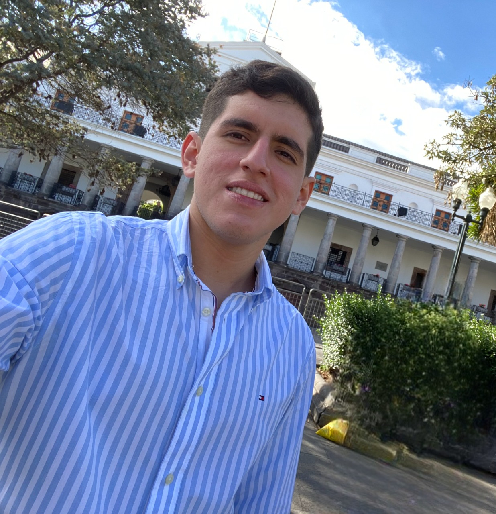

Nuestro Equipo

Angelo Zurita

Noelia Saltos


Transformar la atención médica en Ecuador mediante la implementación de tecnologías avanzadas de inteligencia artificial para la detección temprana y precisa de neumonía. Aspiramos a mejorar la eficiencia de los diagnósticos, reducir la carga de trabajo de los radiólogos y asegurar un acceso equitativo a servicios de salud de calidad en todas las regiones del país.